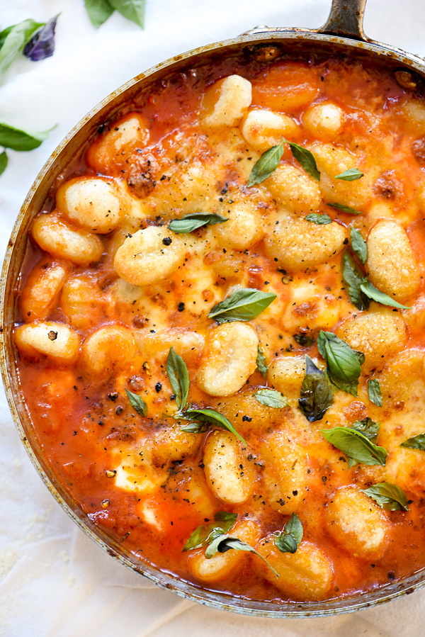

Gnocchi Pomodoro

Description
This simple tomato sauce gets tons of flavour from herbs steeped in olive oil that lusciously coats potato pillows of gnocchi, topped with fresh balls of mozzarella.
Gnocchi is a small dumpling that's made with some combination of mashed potatoes, flour, and sometimes eggs or cheese. When made right, they're ultra soft and slightly chewy.
Gnocchi can be dressed up so many different ways and are a cinch to cook. You know they're finished cooking when the dumplings float on top of the boiling water.
Ingredients
- Olive oil
- Fresh herbs
- Yellow onion
- Garlic
- San Marzano tomatoes
- Kosher salt and pepper
- Red pepper flakes
- Heavy cream
- Mozzarella balls
- Parmesan
Steps
- Add ¼ cup olive oil to a 10-inch high sided sauté pan or a saucepan over medium heat. Add the parsley, oregano, rosemary and 2 stems of basil and cook for about 5 minutes or until the herbs become crisp.
- Remove the herbs and discard then add the onion and garlic to the oil, lowering the heat if needed so the onions cook gently and don't brown. Cook until the onions are transparent, about 5-7 minutes, then crush the tomatoes with your hand and add to the pan with juice.
- Season with kosher salt, freshly ground black pepper and red pepper flakes and simmer for 30-40 minutes or until the sauce reduces and thicken, stirring occasionally. Stir in the heavy cream and remove from the heat.
- Meanwhile, bring a saucepan of water to a boil and add the gnocchi. Season generously with kosher salt and cook until the gnocchi float to the top of the boiling water.
- Drain and then place the gnocchi into the cooked sauce. Top with the halved mozzarella balls and sprinkle with Parmesan cheese then drizzle the tops of the gnocchi with the remaining olive oil.
- Broil for 5-8 minutes or until the cheese melts and the tops become crispy. Garnish with additional basil leaves and serve immediately.